在被確認為特異點F的島國出現微小波動。
那裡曾發生召喚Servant，不讓離去的奇妙現象。
靈子轉移後邂逅到擁有「直死之魔眼」的少女。
借助少女之力挺身調查的Master們究竟能否發現真相呢…？


◆活動舉辦期間◆
2016年2月25日（四）6:00～3月9日（三）12:59
◆活動概要◆
Fate/Grand Order舉辦首次合作活動「空之境界/the Garden of Order」！
來自奈須きのこ原作「空之境界 the Garden of sinners」的女主角「兩儀式」作為活動限定Servant「★4(SR)兩儀式〔Assassin〕」在Fate/Grand Order的世界登場！
與期間限定加入的兩儀式合作攻略地圖，解開出現在特異點F附近的波動之謎吧！
原作者親自執筆！ 獻上過去活動以來最大規模的劇本，敬請期待只有合作才有的故事！
◆活動參加條件◆
唯有通過「特異點F 炎上汚染都市 冬木」的Master方可參加
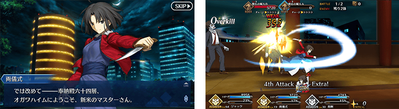
-
- 只能通過一次
| エンカウント | |||||
|---|---|---|---|---|---|
| 消耗AP | 推薦Lv. | 初次報酬 | 開放條件 | ||
| 20 | 10 | 両儀式暫時加入 | 通過：グランドオーダー | ||
| (1/1) | 職階傾向 | QP | Exp | 絆 | |
| 1,400 | 275 | 115 | |||
| 一階 一号室 | |||||
|---|---|---|---|---|---|
| 消耗AP | 推薦Lv. | 初次報酬 | 開放條件 | ||
| 20 | 10 | 概念礼装EXPカード：九字兼定 | 通過：エンカウント | ||
| (1/1) | 職階傾向 | QP | Exp | 絆 | |
| 1,400 | 275 | 115 | |||
| 一階 二号室 | |||||
|---|---|---|---|---|---|
| 消耗AP | 推薦Lv. | 初次報酬 | 開放條件 | ||
| 20 | 10 | 概念礼装EXPカード：九字兼定 | 通過：エンカウント 達成：No.11 | ||
| (1/1) | 職階傾向 | QP | Exp | 絆 | |
| 1,400 | 275 | 115 | |||
| 一階 四号室 | |||||
|---|---|---|---|---|---|
| 消耗AP | 推薦Lv. | 初次報酬 | 開放條件 | ||
| 20 | 10 | 概念礼装EXPカード：九字兼定 | 通過：エンカウント 通過：一階 二号室 | ||
| (1/1) | 職階傾向 | QP | Exp | 絆 | |
| 1,400 | 275 | 115 | |||
| 二階 四号室 | |||||
|---|---|---|---|---|---|
| 消耗AP | 推薦Lv. | 初次報酬 | 開放條件 | ||
| 20 | 20 | 概念礼装EXPカード：九字兼定 | 通過：一階 四号室 通過：二階 三号室 | ||
| (1/1) | 職階傾向 | QP | Exp | 絆 | |
| 2,400 | 955 | 215 | |||
| 三階 四号室 | |||||
|---|---|---|---|---|---|
| 消耗AP | 推薦Lv. | 初次報酬 | 開放條件 | ||
| 20 | 30 | 概念礼装EXPカード：九字兼定 | 通過：二階 四号室 達成：No.35 | ||
| (1/1) | 職階傾向 | QP | Exp | 絆 | |
| 3,400 | 2,190 | 315 | |||
| 四階 四号室 | |||||
|---|---|---|---|---|---|
| 消耗AP | 推薦Lv. | 初次報酬 | 開放條件 | ||
| 20 | 40 | 概念礼装EXPカード：九字兼定 | 通過：三階 四号室 達成：No.39 | ||
| (1/1) | 職階傾向 | QP | Exp | 絆 | |
| 4,400 | 5,690 | 415 | |||
| 森の中 | |||||
|---|---|---|---|---|---|
| 消耗AP | 推薦Lv. | 初次報酬 | 開放條件 | ||
| 5 | 40 | 隠されていた鍵 | 達成：No.81 | ||
| (1/1) | 職階傾向 | QP | Exp | 絆 | |
| 4,400 | 5,690 | 415 | |||
| 五階 四号室 | |||||
|---|---|---|---|---|---|
| 消耗AP | 推薦Lv. | 初次報酬 | 開放條件 | ||
| 20 | 50 | 両儀式 | 通過：四階 四号室 達成：No.18 | ||
| (1/1) | 職階傾向 | QP | Exp | 絆 | |
| 5,400 | 10,190 | 515 | |||
| 六階 一号室 | |||||
|---|---|---|---|---|---|
| 消耗AP | 推薦Lv. | 初次報酬 | 開放條件 | ||
| 20 | 60 | 概念礼装EXPカード：九字兼定 | 通過：五階 四号室 達成：No.54 | ||
| (1/1) | 職階傾向 | QP | Exp | 絆 | |
| 6,400 | 15,690 | 615 | |||
| 六階 四号室 | |||||
|---|---|---|---|---|---|
| 消耗AP | 推薦Lv. | 初次報酬 | 開放條件 | ||
| 20 | 60 | 概念礼装EXPカード：九字兼定 | 通過：五階 四号室 達成：No.49 | ||
| (1/1) | 職階傾向 | QP | Exp | 絆 | |
| 6,400 | 15,690 | 615 | |||
| 七階 一号室 | |||||
|---|---|---|---|---|---|
| 消耗AP | 推薦Lv. | 初次報酬 | 開放條件 | ||
| 20 | 70 | 概念礼装EXPカード：九字兼定 | 通過：六階 四号室 達成：No.26 | ||
| (1/1) | 職階傾向 | QP | Exp | 絆 | |
| 7,400 | 22,190 | 715 | |||
| 七階 四号室 | |||||
|---|---|---|---|---|---|
| 消耗AP | 推薦Lv. | 初次報酬 | 開放條件 | ||
| 20 | 70 | 概念礼装EXPカード：九字兼定 | 通過：六階 四号室 | ||
| (1/1) | 職階傾向 | QP | Exp | 絆 | |
| 7,400 | 22,190 | 715 | |||
| 八階 一号室 | |||||
|---|---|---|---|---|---|
| 消耗AP | 推薦Lv. | 初次報酬 | 開放條件 | ||
| 20 | 80 | 10,000,000QP | 通過：七階 四号室 | ||
| (1/1) | 職階傾向 | QP | Exp | 絆 | |
| 8,400 | 29,690 | 815 | |||
| 八階 四号室 | |||||
|---|---|---|---|---|---|
| 消耗AP | 推薦Lv. | 初次報酬 | 開放條件 | ||
| 20 | 80 | 10,000,000QP | 通過：七階 四号室 達成：No.72 | ||
| (1/1) | 職階傾向 | QP | Exp | 絆 | |
| 8,400 | 29,690 | 815 | |||
| 明の境界 | |||||
|---|---|---|---|---|---|
| 消耗AP | 推薦Lv. | 初次報酬 | 開放條件 | ||
| 20 | 80 | 伝承結晶 | 達成：No.98 | ||
| (1/1) | 職階傾向 | QP | Exp | 絆 | |
| 8,400 | 29,690 | 815 | |||
| 屋上 | |||||
|---|---|---|---|---|---|
| 消耗AP | 推薦Lv. | 初次報酬 | 開放條件 | ||
| 20 | 90 | 竜の逆鱗x5 | 達成：No.100 | ||
| (1/1) | 職階傾向 | QP | Exp | 絆 | |
| 9,400 | 38,190 | 915 | |||
-
- 可重複通過
| マンション入口 | |||||
|---|---|---|---|---|---|
| 消耗AP | 推薦Lv. | 初次報酬 | 開放條件 | ||
| 20 | 10 | 概念礼装EXPカード：九字兼定 | 通過：エンカウント | ||
| (1/1) | 職階傾向 | QP | Exp | 絆 | |
| 1,400 | 275 | 115 | |||
| 一階 一号室・退去後 | |||||
|---|---|---|---|---|---|
| 消耗AP | 推薦Lv. | 初次報酬 | 開放條件 | ||
| 20 | 10 | 概念礼装EXPカード：九字兼定 | 通過：一階 一号室 | ||
| (1/1) | 職階傾向 | QP | Exp | 絆 | |
| 1,400 | 275 | 115 | |||
| 一階 三号室 | |||||
|---|---|---|---|---|---|
| 消耗AP | 推薦Lv. | 初次報酬 | 開放條件 | ||
| 20 | 10 | 概念礼装EXPカード：九字兼定 | 通過：エンカウント 達成：No.15 | ||
| (1/1) | 職階傾向 | QP | Exp | 絆 | |
| 1,400 | 275 | 115 | |||
| 二階 一号室 | |||||
|---|---|---|---|---|---|
| 消耗AP | 推薦Lv. | 初次報酬 | 開放條件 | ||
| 20 | 20 | 概念礼装EXPカード：九字兼定 | 通過：一階 四号室 | ||
| (1/1) | 職階傾向 | QP | Exp | 絆 | |
| 2,400 | 955 | 215 | |||
| 二階 二号室 | |||||
|---|---|---|---|---|---|
| 消耗AP | 推薦Lv. | 初次報酬 | 開放條件 | ||
| 20 | 20 | 概念礼装EXPカード：九字兼定 | 通過：一階 四号室 達成：No.19 | ||
| (1/1) | 職階傾向 | QP | Exp | 絆 | |
| 2,400 | 955 | 215 | |||
| 二階 三号室 | |||||
|---|---|---|---|---|---|
| 消耗AP | 推薦Lv. | 初次報酬 | 開放條件 | ||
| 20 | 20 | 概念礼装EXPカード：九字兼定 | 通過：一階 四号室 達成：No.23 | ||
| (1/1) | 職階傾向 | QP | Exp | 絆 | |
| 2,400 | 955 | 215 | |||
| 三階 一号室 | |||||
|---|---|---|---|---|---|
| 消耗AP | 推薦Lv. | 初次報酬 | 開放條件 | ||
| 20 | 30 | 概念礼装EXPカード：九字兼定 | 通過：二階 四号室 達成：No.31 | ||
| (1/1) | 職階傾向 | QP | Exp | 絆 | |
| 3,400 | 2,190 | 315 | |||
| 三階 二号室 | |||||
|---|---|---|---|---|---|
| 消耗AP | 推薦Lv. | 初次報酬 | 開放條件 | ||
| 20 | 30 | 概念礼装EXPカード：九字兼定 | 通過：二階 四号室 達成：No.27 | ||
| (1/1) | 職階傾向 | QP | Exp | 絆 | |
| 3,400 | 2,190 | 315 | |||
| 三階 三号室 | |||||
|---|---|---|---|---|---|
| 消耗AP | 推薦Lv. | 初次報酬 | 開放條件 | ||
| 20 | 30 | 概念礼装EXPカード：九字兼定 | 通過：二階 四号室 | ||
| (1/1) | 職階傾向 | QP | Exp | 絆 | |
| 3,400 | 2,190 | 315 | |||
| 四階 一号室 | |||||
|---|---|---|---|---|---|
| 消耗AP | 推薦Lv. | 初次報酬 | 開放條件 | ||
| 20 | 40 | 概念礼装EXPカード：九字兼定 | 通過：三階 四号室 | ||
| (1/1) | 職階傾向 | QP | Exp | 絆 | |
| 4,400 | 5,690 | 415 | |||
| 四階 二号室 | |||||
|---|---|---|---|---|---|
| 消耗AP | 推薦Lv. | 初次報酬 | 開放條件 | ||
| 20 | 40 | 概念礼装EXPカード：九字兼定 | 通過：三階 四号室 達成：No.70 | ||
| (1/1) | 職階傾向 | QP | Exp | 絆 | |
| 4,400 | 5,690 | 415 | |||
| 四階 三号室 | |||||
|---|---|---|---|---|---|
| 消耗AP | 推薦Lv. | 初次報酬 | 開放條件 | ||
| 20 | 40 | 概念礼装EXPカード：九字兼定 | 通過：三階 四号室 通過：四階 一号室 | ||
| (1/1) | 職階傾向 | QP | Exp | 絆 | |
| 4,400 | 5,690 | 415 | |||
| 五階 一号室 | |||||
|---|---|---|---|---|---|
| 消耗AP | 推薦Lv. | 初次報酬 | 開放條件 | ||
| 20 | 50 | 概念礼装EXPカード：九字兼定 | 通過：四階 四号室 | ||
| (1/1) | 職階傾向 | QP | Exp | 絆 | |
| 5,400 | 10,190 | 515 | |||
| 五階 二号室 | |||||
|---|---|---|---|---|---|
| 消耗AP | 推薦Lv. | 初次報酬 | 開放條件 | ||
| 20 | 50 | 概念礼装EXPカード：九字兼定 | 通過：四階 四号室 達成：No.45 | ||
| (1/1) | 職階傾向 | QP | Exp | 絆 | |
| 5,400 | 10,190 | 515 | |||
| 五階 三号室 | |||||
|---|---|---|---|---|---|
| 消耗AP | 推薦Lv. | 初次報酬 | 開放條件 | ||
| 20 | 50 | 概念礼装EXPカード：九字兼定 | 通過：四階 四号室 達成：No.22 | ||
| (1/1) | 職階傾向 | QP | Exp | 絆 | |
| 5,400 | 10,190 | 515 | |||
| 六階 二号室 | |||||
|---|---|---|---|---|---|
| 消耗AP | 推薦Lv. | 初次報酬 | 開放條件 | ||
| 20 | 60 | 概念礼装EXPカード：九字兼定 | 通過：五階 四号室 達成：No.50 | ||
| (1/1) | 職階傾向 | QP | Exp | 絆 | |
| 6,400 | 15,690 | 615 | |||
| 六階 三号室 | |||||
|---|---|---|---|---|---|
| 消耗AP | 推薦Lv. | 初次報酬 | 開放條件 | ||
| 20 | 60 | 概念礼装EXPカード：九字兼定 | 通過：五階 四号室 | ||
| (1/1) | 職階傾向 | QP | Exp | 絆 | |
| 6,400 | 15,690 | 615 | |||
| 七階 二号室 | |||||
|---|---|---|---|---|---|
| 消耗AP | 推薦Lv. | 初次報酬 | 開放條件 | ||
| 20 | 70 | 概念礼装EXPカード：九字兼定 | 通過：六階 四号室 達成：No.14 | ||
| (1/1) | 職階傾向 | QP | Exp | 絆 | |
| 7,400 | 22,190 | 715 | |||
| 七階 三号室 | |||||
|---|---|---|---|---|---|
| 消耗AP | 推薦Lv. | 初次報酬 | 開放條件 | ||
| 20 | 70 | 概念礼装EXPカード：九字兼定 | 通過：六階 四号室 達成：No.71 | ||
| (1/1) | 職階傾向 | QP | Exp | 絆 | |
| 7,400 | 22,190 | 715 | |||
| 八階 二号室 | |||||
|---|---|---|---|---|---|
| 消耗AP | 推薦Lv. | 初次報酬 | 開放條件 | ||
| 20 | 80 | 10,000,000QP | 通過：七階 四号室 達成：No.38 | ||
| (1/1) | 職階傾向 | QP | Exp | 絆 | |
| 8,400 | 29,690 | 815 | |||
| 八階 三号室 | |||||
|---|---|---|---|---|---|
| 消耗AP | 推薦Lv. | 初次報酬 | 開放條件 | ||
| 20 | 80 | 10,000,000QP | 通過：七階 四号室 達成：No.67 | ||
| (1/1) | 職階傾向 | QP | Exp | 絆 | |
| 8,400 | 29,690 | 815 | |||
| 駐車場 | |||||
|---|---|---|---|---|---|
| 消耗AP | 推薦Lv. | 初次報酬 | 開放條件 | ||
| 20 | 60 | 黄金の果実x3 | 達成：No.82 | ||
| (1/1) | 職階傾向 | QP | Exp | 絆 | |
| 6,400 | 15,690 | 615 | |||
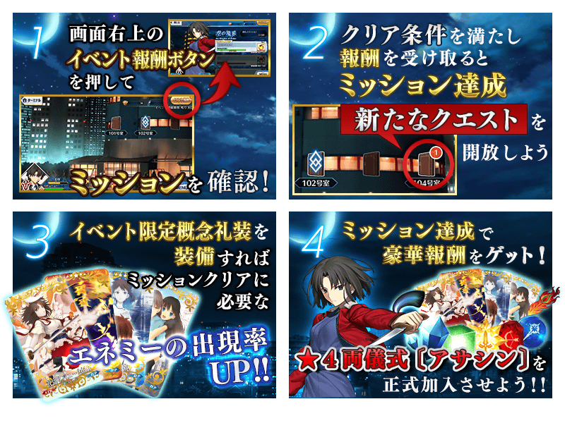
此活動會發生達成「收集一定數以上道具」「擊倒某種類的敵人」等各種條件來獲得豪華報酬的任務(Mission)！
另外，依照任務的完成數還會開放新的任務和關卡(Quest)。
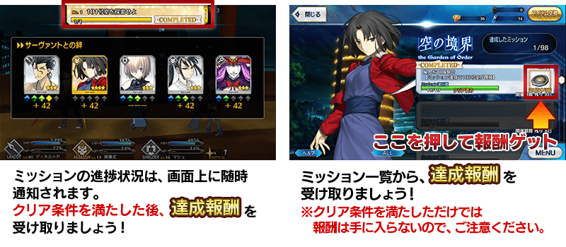
| 任務 | 獎勵 | 解鎖條件 |
|---|---|---|
| No.1「101号室を探索せよ」 | 黄金の果実 | 2/25 0:00～ |
| No.2「102号室を探索せよ」 | 夏の未来視 | 達成：No.11 |
| No.3「104号室を探索せよ」 | 呼符 | 達成：No.2 |
| No.4「204号室を探索せよ」 | 呼符 | 通過：二階 三号室 |
| No.5「304号室を探索せよ」 | 呼符 | 達成：No.4 |
| No.6「404号室を探索せよ」 | 呼符 | 達成：No.5 |
| No.7「504号室を探索せよ」 | 呼符 | 達成：No.6 |
| No.8「604号室を探索せよ」 | 呼符 | 達成：No.49 |
| No.9「704号室を探索せよ」 | 呼符 | 達成：No.8 |
| No.10「804号室を探索せよ」 | マナプリズムx500 | 達成：No.72 |
| No.11「屍人を10体倒せ」 | 英雄の証x5
開放：102号室-一階 二号室 | 達成：No.1 |
| No.12「屍人を50体倒せ」 | 英雄の証x10 | 達成：No.11 |
| No.13「屍人を100体倒せ」 | 英雄の証x15 | 達成：No.12 |
| No.14「屍人を200体倒せ」 | 隕蹄鉄x10
開放：702号室-七階 二号室 | 達成：No.8 |
| No.15「マンション霊を20体倒せ」 | 世界樹の種x5
開放：103号室-一階 三号室 | 達成：No.2 |
| No.16「マンション霊を50体倒せ」 | 世界樹の種x10 | 達成：No.15 |
| No.17「マンション霊を100体倒せ」 | 世界樹の種x15 | 達成：No.16 |
| No.18「マンション霊を200体倒せ」 | ホムンクルスベビーx10
開放：504号室-五階 四号室 | 達成：No.6 |
| No.19「スケルトンを20体倒せ」 | 凶骨x5
開放：202号室-二階 二号室 | 達成：No.3 |
| No.20「スケルトンを50体倒せ」 | 凶骨x10 | 達成：No.19 |
| No.21「スケルトンを100体倒せ」 | 凶骨x15 | 達成：No.20 |
| No.22「スケルトンを200体倒せ」 | 蛮神の心臓x5
開放：503号室-五階 三号室 | 達成：No.6 |
| No.23「素体を20体倒せ」 | 竜の牙x5
開放：203号室-二階 三号室 | 通過：二階 一号室 |
| No.24「素体を50体倒せ」 | 竜の牙x10 | 達成：No.23 |
| No.25「素体を100体倒せ」 | 竜の牙x15 | 達成：No.24 |
| No.26「素体を200体倒せ」 | 竜の逆鱗x5
開放：701号室-七階 一号室 | 達成：No.8 |
| No.27「男性サーヴァントを10騎倒せ」 | セイバーピースx5
開放：302号室-三階 二号室 | 達成：No.4 |
| No.28「男性サーヴァントを20騎倒せ」 | セイバーピースx5 | 達成：No.27 |
| No.29「男性サーヴァントを30騎倒せ」 | セイバーモニュメントx5 | 達成：No.28 |
| No.30「男性サーヴァントを40騎倒せ」 | セイバーモニュメントx5 | 達成：No.29 |
| No.31「女性サーヴァントを10騎倒せ」 | ランサーピースx5
開放：301号室-三階 一号室 | 達成：No.4 |
| No.32「女性サーヴァントを20騎倒せ」 | ランサーピースx5 | 達成：No.31 |
| No.33「女性サーヴァントを30騎倒せ」 | ランサーモニュメントx5 | 達成：No.32 |
| No.34「女性サーヴァントを40騎倒せ」 | ランサーモニュメントx5 | 達成：No.33 |
| No.35「七人御佐姫を30体倒せ」 | 黄金の果実x2
開放：304号室-三階 四号室 | 達成：No.4 |
| No.36「七人御佐姫を60体倒せ」 | 黄金の果実x3 | 達成：No.35 |
| No.37「七人御佐姫を100体倒せ」 | 黄金の果実x4 | 達成：No.36 |
| No.38「七人御佐姫を200体倒せ」 | 黄金の果実x5
開放：802号室-八階 二号室 | 達成：No.9 |
| No.39「アサシンクラスのサーヴァントを15騎倒せ」 | アサシンピースx5
開放：404号室-四階 四号室 | 達成：No.5 |
| No.40「アサシンクラスのサーヴァントを25騎倒せ」 | アサシンモニュメントx5 | 達成：No.39 |
| No.41「ライダークラスのサーヴァントを15騎倒せ」 | ライダーピースx5 | 達成：No.5 |
| No.42「ライダークラスのサーヴァントを25騎倒せ」 | ライダーモニュメントx5 | 達成：No.41 |
| No.43「バーサーカークラスのサーヴァントを15騎倒せ」 | バーサーカーピースx5 | 達成：No.5 |
| No.44「バーサーカークラスのサーヴァントを25騎倒せ」 | バーサーカーモニュメントx5 | 達成：No.43 |
| No.45「神性サーヴァントを10騎倒せ」 | アーチャーピースx5
開放：502号室-五階 二号室 | 達成：No.6 |
| No.46「神性サーヴァントを15騎倒せ」 | アーチャーピースx5 | 達成：No.45 |
| No.47「神性サーヴァントを20騎倒せ」 | アーチャーモニュメントx5 | 達成：No.46 |
| No.48「神性サーヴァントを25騎倒せ」 | アーチャーモニュメントx5 | 達成：No.47 |
| No.49「ラプンツェルを20体倒せ」 | 両儀式
開放：604号室-六階 四号室 | 達成：No.7 |
| No.50「悪サーヴァントを10騎倒せ」 | キャスターピースx5
開放：602号室-六階 二号室 | 達成：No.7 |
| No.51「悪サーヴァントを20騎倒せ」 | キャスターピースx5 | 達成：No.50 |
| No.52「悪サーヴァントを30騎倒せ」 | キャスターモニュメントx5 | 達成：No.51 |
| No.53「悪サーヴァントを40騎倒せ」 | 両儀式 | 達成：No.52 |
| No.54「混沌のサーヴァントを10騎倒せ」 | アサシンピースx5
開放：601号室-六階 一号室 | 達成：No.7 |
| No.55「混沌のサーヴァントを20騎倒せ」 | ライダーピースx5 | 達成：No.54 |
| No.56「混沌のサーヴァントを30騎倒せ」 | バーサーカーピースx5 | 達成：No.55 |
| No.57「混沌のサーヴァントを40騎倒せ」 | アサシンモニュメントx5 | 達成：No.56 |
| No.58「一階の部屋をすべてクリアせよ」 | 剣の輝石x10 | 達成：No.2 |
| No.59「二階の部屋をすべてクリアせよ」 | 弓の輝石x10 | 達成：No.3 |
| No.60「三階の部屋をすべてクリアせよ」 | 槍の輝石x10 | 達成：No.4 |
| No.61「四階の部屋をすべてクリアせよ」 | 騎の輝石x10 | 達成：No.5 |
| No.62「五階の部屋をすべてクリアせよ」 | 術の輝石x10 | 達成：No.6 |
| No.63「六階の部屋をすべてクリアせよ」 | 殺の輝石x10 | 達成：No.7 |
| No.64「七階の部屋をすべてクリアせよ」 | 狂の輝石x10 | 達成：No.8 |
| No.65「八階の部屋をすべてクリアせよ」 | 聖晶石 | 達成：No.9 |
| No.66「すべての階の一号室をクリアせよ」 | 両儀式 | 達成：No.9 |
| No.67「すべての階の二号室をクリアせよ」 | ライダーモニュメントx5
開放：803号室-八階 三号室 | 達成：No.9 |
| No.68「すべての階の三号室をクリアせよ」 | キャスターモニュメントx5 | 達成：No.9 |
| No.69「すべての階の四号室をクリアせよ」 | バーサーカーモニュメントx5 | 達成：No.9 |
| No.70「三階までの部屋をすべてクリアせよ」 | 業物ナイフ
開放：402号室-四階 二号室 | 達成：No.4 |
| No.71「六階までの部屋をすべてクリアせよ」 | 業物ナイフ
開放：703号室-七階 三号室 | 達成：No.7 |
| No.72「804号室以外のすべての部屋をクリアせよ」 | 概念礼装EXPカード：九字兼定x5
開放：804号室-八階 四号室 | 達成：No.9 |
| No.73「一階の部屋のうちどれかを合計10回クリアせよ」 | 聖晶石 | 達成：No.2 |
| No.74「二階の部屋のうちどれかを合計10回クリアせよ」 | 聖晶石 | 達成：No.3 |
| No.75「三階の部屋のうちどれかを合計10回クリアせよ」 | 聖晶石 | 達成：No.4 |
| No.76「四階の部屋のうちどれかを合計10回クリアせよ」 | 聖晶石 | 達成：No.5 |
| No.77「五階の部屋のうちどれかを合計10回クリアせよ」 | 聖晶石 | 達成：No.6 |
| No.78「六階の部屋のうちどれかを合計10回クリアせよ」 | 聖晶石 | 達成：No.7 |
| No.79「七階の部屋のうちどれかを合計10回クリアせよ」 | 聖晶石 | 達成：No.8 |
| No.80「八階の部屋のうちどれかを合計10回クリアせよ」 | 聖晶石 | 達成：No.9 |
| No.81「ミッションを30個クリアせよ」 | 業物ナイフ
開放：焼却炉跡-森の中 | 達成：No.3 |
| No.82「ミッションを60個クリアせよ」 | 業物ナイフ
開放：駐車場-駐車場 | 達成：No.81 |
| No.83「ミッションを90個クリアせよ」 | 両儀式 | 達成：No.82 |
| No.84「ミネラルウォーターを累計100個獲得せよ」 | 1,000,000QP | 達成：No.2 |
| No.85「ミネラルウォーターを累計500個獲得せよ」 | 5,000,000QP | 達成：No.84 |
| No.86「ストロベリーアイスを累計100個獲得せよ」 | 1,000,000QP | 達成：No.2 |
| No.87「ストロベリーアイスを累計500個獲得せよ」 | 5,000,000QP | 達成：No.86 |
| No.88「黒猫フィギュアを累計100個獲得せよ」 | 1,000,000QP | 達成：No.2 |
| No.89「黒猫フィギュアを累計500個獲得せよ」 | 5,000,000QP | 達成：No.88 |
| No.90「両儀式〔アサシン〕が正式加入する」 | 概念礼装EXPカード：九字兼定x5 | 達成：No.7 |
| No.91「両儀式〔アサシン〕の霊基再臨を1段階目にする」 | 概念礼装EXPカード：九字兼定x5 | 達成：No.90 |
| No.92「両儀式〔アサシン〕の霊基再臨を2段階目にする」 | 概念礼装EXPカード：九字兼定x5 | 達成：No.91 |
| No.93「両儀式〔アサシン〕の絆レベルが1になる」 | 八連双晶x5 | 達成：No.90 |
| No.94「両儀式〔アサシン〕の絆レベルが2になる」 | 八連双晶x10 | 達成：No.93 |
| No.95「両儀式〔アサシン〕の絆レベルが3になる」 | 八連双晶x15 | 達成：No.94 |
| No.96「両儀式〔アサシン〕の絆レベルが4になる」 | 蛮神の心臓x5 | 達成：No.95 |
| No.97「両儀式〔アサシン〕の絆レベルが5になる」 | 竜の逆鱗x5 | 達成：No.96 |
| No.98「隠されていた鍵を獲得せよ」 | 黄金の果実
開放：屋上-明の境界 | 3/2 23:00～ |
| No.99「屋上を探索せよ」 | マナプリズムx500 | 達成：No.98 |
| No.100「すべてのミッションをクリアせよ」 | 伝承結晶
開放：屋上-屋上 | 達成：No.3 |
◆超值攻略方法◆
裝備概念禮裝讓任務更有利進行吧！
裝備期間限定概念禮裝的話，作為任務通過條件對象的活動道具「黑貓公仔」「草莓冰淇淋」「礦泉水」的掉落獲得數會增加。
另外，裝備活動限定概念禮裝的話，作為任務通過條件對象的敵人的追加出現率會增加。
※請注意在各關卡的道具掉落率並非100%。
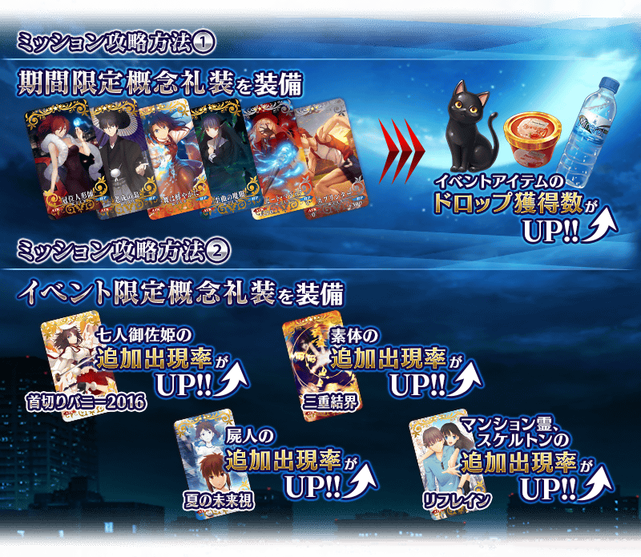
| 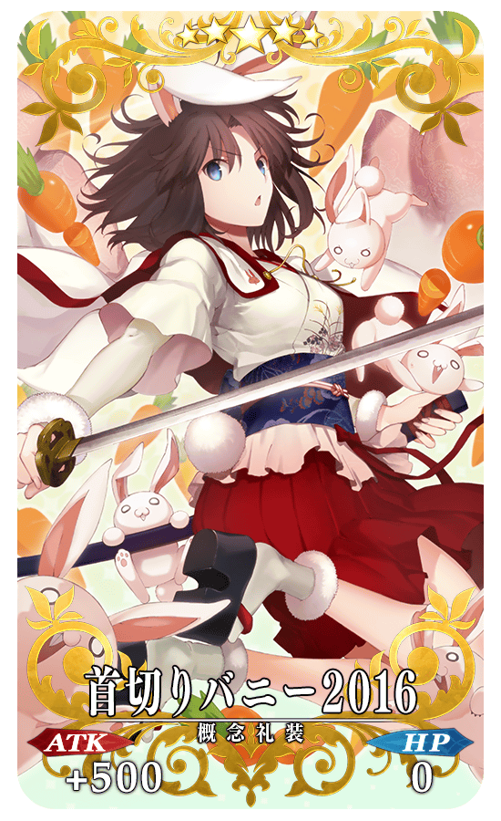 |
◆活動限定概念禮裝◆ |
 |
★★★★★SSR |
| 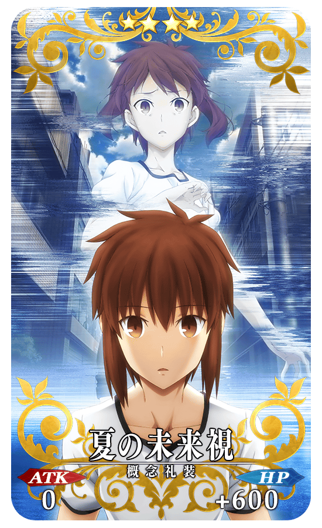 |
★★★★SR |

| 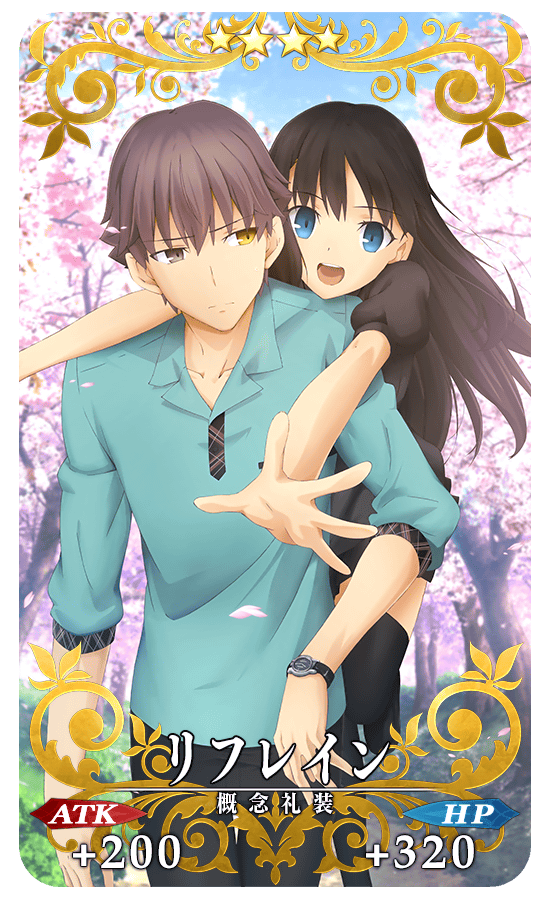 |
★★★★SR |
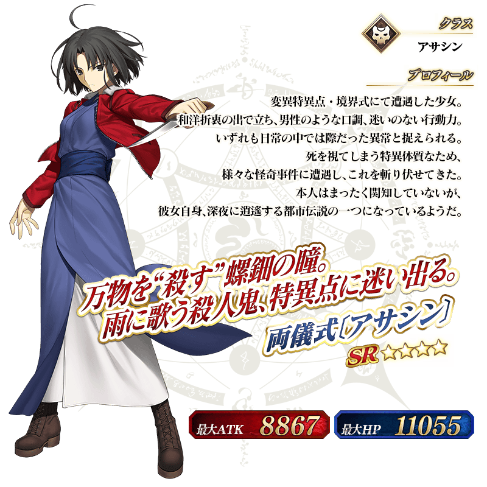
◆靈基再臨◆
使用活動期間中的以任務報酬外無法入手的「業物小刀」，重複4次靈基再臨的話，卡面會有所變化！
※兩儀式〔Assassin〕不會隨靈基再臨使戰鬥角色的外觀變化。
◆活動期間限定，獲得概念禮裝用EXP卡「九字兼定」吧！◆
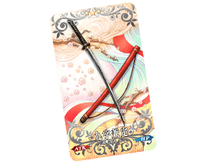
作為活動期間限定關卡的通過報酬，能大幅度強化概念禮裝的EXP卡登場！
無論如何請藉此機會通過關卡，強化喜愛的概念禮裝！
◆交換方法◆
交換期間：2月25日（四）6:00～3月16日（三）12:59
※交換期間結束後，「黑貓公仔」「草莓冰淇淋」「礦泉水」會消失。
從達文西工房内的「活動道具交換」，以收集來的活動專用道具來交換以下的道具。
◆能用黑貓公仔交換的道具◆
| 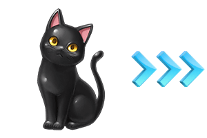 |
【活動限定概念禮裝】 【靈基再臨素材】 【其他道具】 |
◆能用草莓冰淇淋交換的道具◆
 |
【活動限定概念禮裝】 【靈基再臨素材】 【其他道具】 |
◆能用礦泉水交換的道具◆
|
【活動限定概念禮裝】 【各種卡片】 【靈基再臨素材】 【其他道具】 |
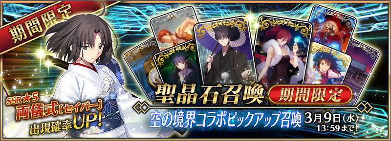
◆空之境界合作Pick Up召喚期間◆
期間：2016年2月25日（四）6：00～3月9日（三）12：59
為了紀念合作活動，以期間限定舉辦Pick Up召喚！
從「空之境界 the Garden of sinners」來的女主角「兩儀式」作為Servant「★5（SSR）兩儀式〔Saber〕」以期間限定登場！
※「★5（SSR）兩儀式〔Saber〕」在Pick Up召喚期間結束後，不會追加到故事召喚。
裝備期間限定概念禮裝「★5（SSR）冠位人形師」、「★5（SSR）老成の翁」、 「★4（SR）拳舞は鮮やかに」、 「★4（SR）歪曲の魔眼」、「★3（R）リピート・マジック」、「★3（R）スプリンター」的話，活動專用道具的獲得數會提升。
在Pick Up期間中，期間限定Servant、期間限定概念禮裝的出現機率提升！
10次召喚★4(SR)以上1枚確定和★3(R)以上的Servant1位確定！
※★4(SR)以上確定包含Servant和概念禮裝。
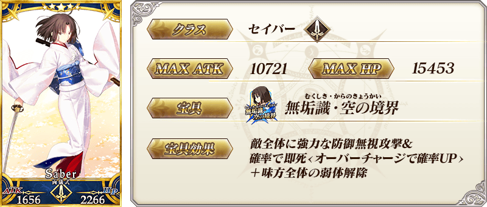
| 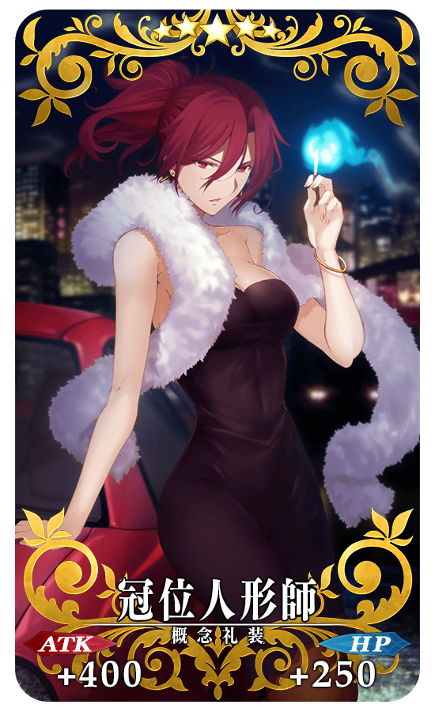 |
★★★★★SSR |
| 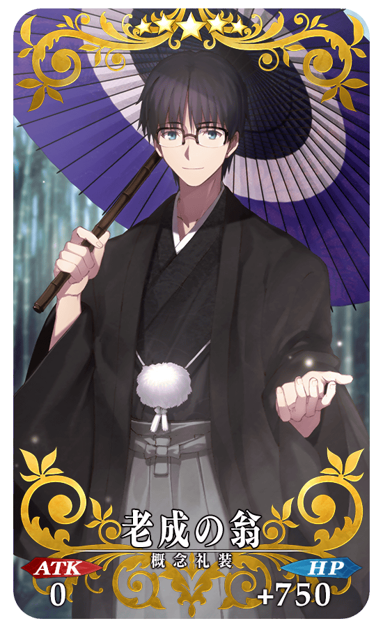 |
★★★★★SSR |
| 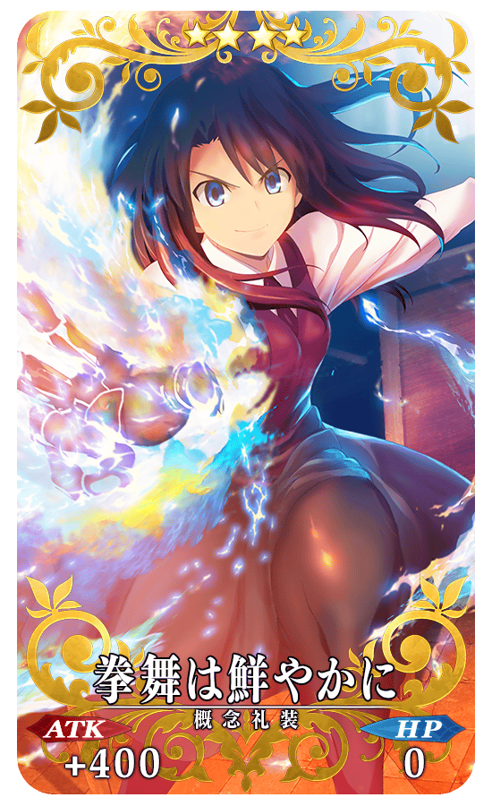 |
★★★★SR |

| 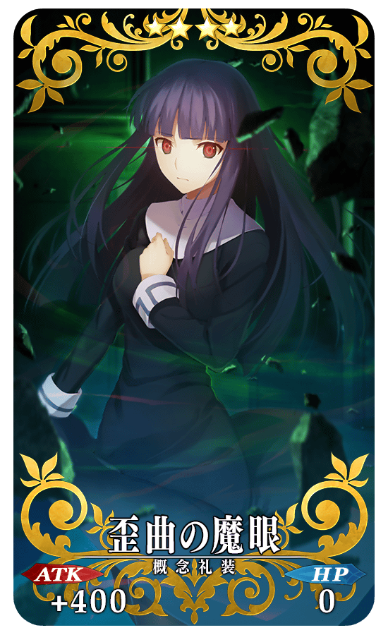 |
★★★★SR |
| 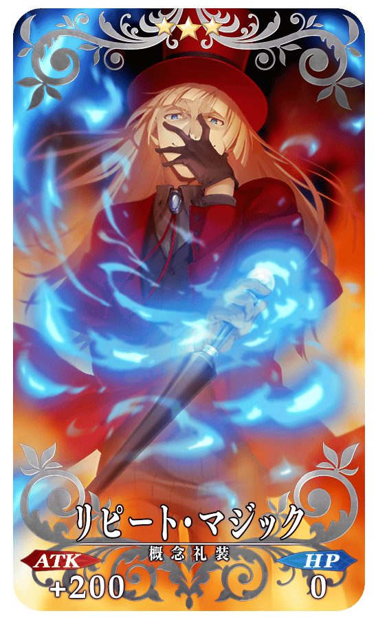 |
★★★R |
| 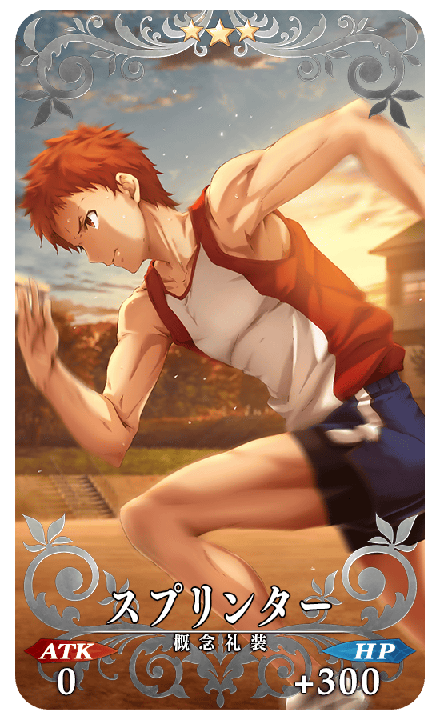 |
★★★R |
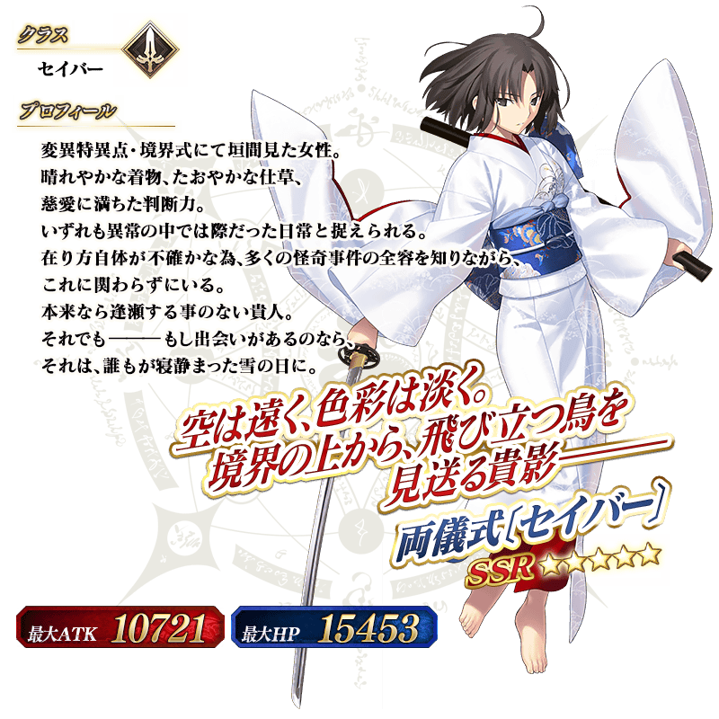